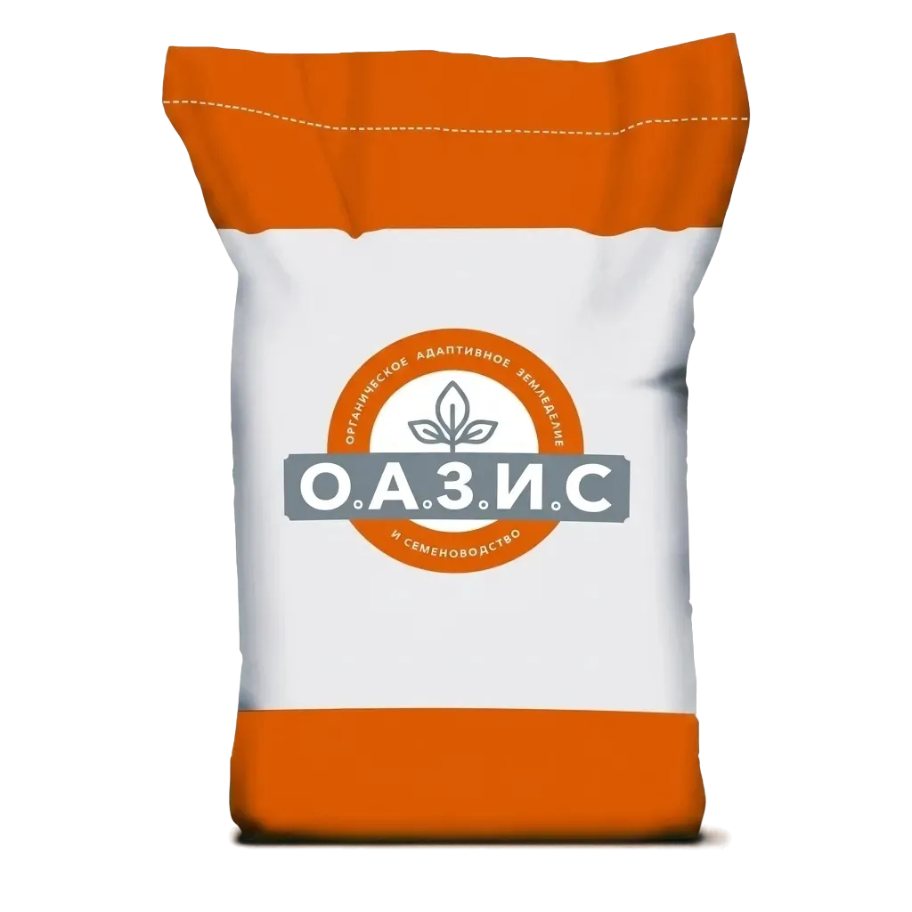

Упаковка наших семян
Как мы упаковываем семена: забота о качестве
В компании О.А.З.И.С мы понимаем: даже самые лучшие семена могут потерять свои свойства при неправильном хранении. Поэтому мы уделяем повышенное внимание упаковке семян, чтобы максимально сохранить посевные качества каждого зернышка.
Этапы упаковки:
-
Очистка и калибровка
Перед упаковкой семена проходят финальную очистку и калибровку на современном оборудовании. Мы отсеиваем поврежденные и мелкие фракции, оставляя только выровненный, кондиционный материал с высокой энергией прорастания.
-
Выбор упаковки
В зависимости от типа семян и назначения мы выбираем наиболее подходящий вид упаковки.
-
Вакуумирование для премиальных семян
Для особо ценных сортов и гибридов мы применяем вакуумную упаковку. Отсутствие кислорода полностью останавливает процессы дыхания семян, что позволяет хранить их до 3 лет без потери всхожести.
-
Маркировка и контроль
Каждая упаковка получает уникальный номер партии. Мы наносим на пакет:
- Название культуры и сорта
- Номер партии и дату упаковки
- Срок годности
- Рекомендации по посеву
- Штрих-код для складского учета